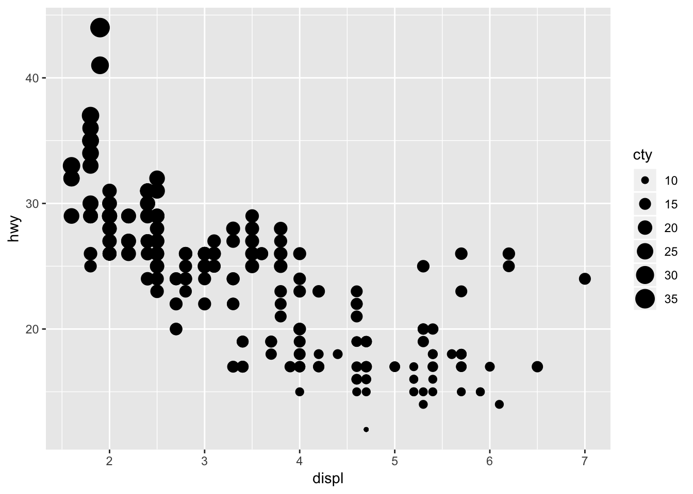
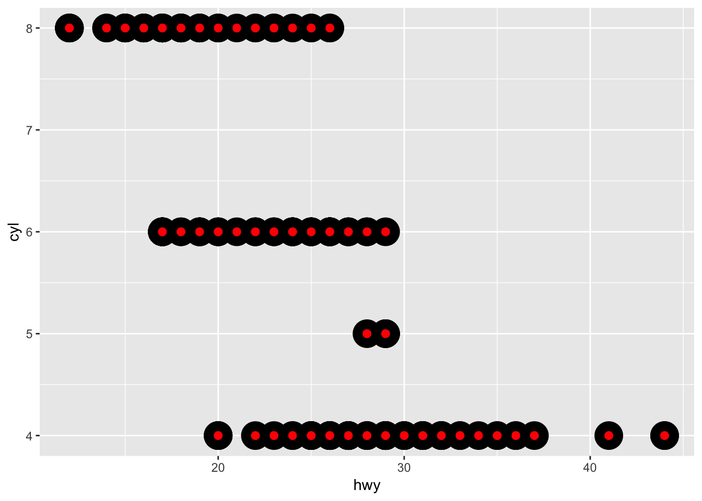
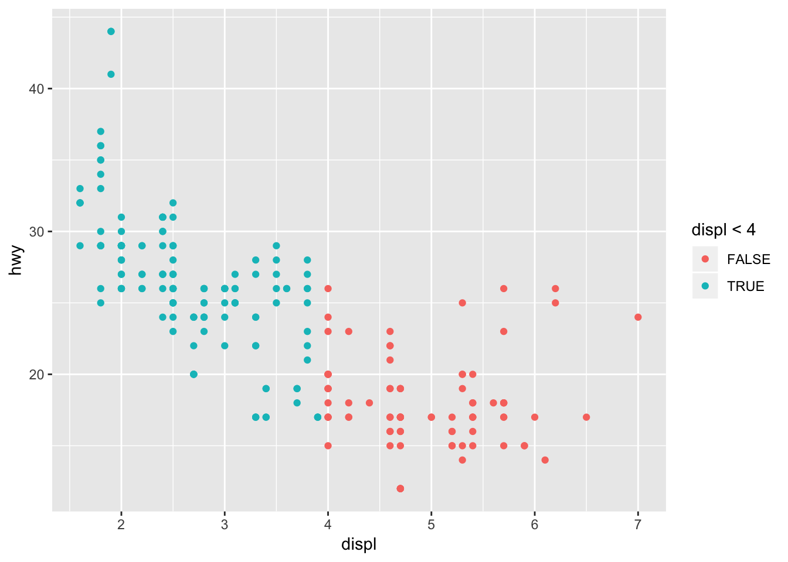

Глава 5 Моделирование
Знакомимся с Exploratory data analysis (EDA) — разведочный анализ данных.
Цель моделирования — получение простых суммарных (сводных) характеристик набора данных.
Здесь разбриаем предсказательные модели анализа данных. Есть ещё много разных, например data discovery, но их здесь не рассматриваем
Базовые принципы корректного статистического вывода:
Каждое наблюдение можно использовать либо для разведочного анализа, либо для подтверждения гипотезы. Но не для того и другого одновременно
В целях разведочного анализа допускается многократное использование наблюдения, но в целях подтверждения гипотез — только однократное. Использование одного и того же наблюдения более одного раза равносильно преходу от подтверждения гипотезы к разведочному анализу.
Данные используемые для подтверждения гипотезы не должны зависеть от данных на основании которых эта гипотеза была выдвинута.
5.0.1 Выдвижение гипотез и их подтверждение
Один из подходов к анализу, направленному на подтверждение гипотезы, заключается в разбиении данных на три части ещё до того, как присутпить к анализу
\(60%\) — training set. С этим набором можноделать всё что пожелается.
\(20%\) — query set. Набор для сравнения моделей или вариантов визуализации вручную, но их не разрешается использовать в качестве части автоматизированного процесса.
\(20%\) — test set. Эти данные можно использовать только один раз для тестирования окончательной модели.
5.1 Базовое моделирование при помощи пакета modelr
5.1.1 Введение
Цель моделирования — определение суммарных характеристик набора данных.
Моделирование включает два аспекта
Прежде всего необходимо определить семейство моделей. Они определяют типичную закономерность, например линейную или квадратичную зависимость. Семейство моделей описывается уравнением наподобие
y = a_1 * x + a_2ory = a_1 * x ^ a_2. Гдеxиy— известные переменные, аa_1иa_2варьируемые параметры.Далее вы генерируете подходяющую модель, выбирая ту из семейства моделей, которая больше всего соответствует данным. В результате этого обобщенного уравнения семейства моделей конкретизируется принимая вид наподобие
y = 3 * x + 7
Целью моделирования является не установление окончательной истины, а нахождение простого, но тем не менее полезного приближения
5.1.1.1 Необходимые ресурсы
library(tidyverse)## ── Attaching packages ───────────────────────────────────────────────────────────────────────────────────────────────────────── tidyverse 1.2.1 ──## ✔ ggplot2 3.1.0 ✔ purrr 0.3.0
## ✔ tibble 2.0.1 ✔ dplyr 0.8.0.1
## ✔ tidyr 0.8.2 ✔ stringr 1.4.0
## ✔ readr 1.3.1 ✔ forcats 0.4.0## ── Conflicts ──────────────────────────────────────────────────────────────────────────────────────────────────────────── tidyverse_conflicts() ──
## ✖ dplyr::filter() masks stats::filter()
## ✖ dplyr::lag() masks stats::lag()library(modelr)
options(na.action = na.warn)5.1.2 Простая модель
Демонстрационный набор данный sim1 содержит две непрерывные переменные x и y. Отложим их на графике, чтобы увидеть, как они связаны между собой
ggplot(sim1, aes(x, y)) +
geom_point()
между переменными наблюдается сильная взаимосвязь. Коэффициент корреляции
cor(sim1$x, sim1$y)## [1] 0.9405384Опишем эту взаимосвязь с помощью модели и выразим ее в явном виде.
Наша задача — предоставить базовую форму модели. В данном случае мы используем линейное соотношение между переменными y = a_0 + a_1 * x.
Начнем с получения общего представления о том, как выглядят модели этого семейства. Путём случайной генерации некоторых из них и наложения их на данные.
В нашем случае можно использовать geom_abline — она принимает наклон (slope), и y-пересечение (intercept).
models <- tibble(
a1 = runif(250, -20, 40),
a2 = runif(250, -5, 5)
)
ggplot(sim1, aes(x, y)) +
geom_abline(
aes(intercept = a1, slope = a2),
data = models, alpha = 1/4
) +
geom_point()Большинство из построенных моделей совсем неудачны. Нам нужен метод обеспечивающий количественную оценку расстояния между данными и моделью.
Это расстояние — разность между значением предоставляемым моделью — прогноз, и фактическим значением y согласно данным data — результат.
{kind=link}
Для вычисления расстояния мы прежде всего превратим семейство моделей в функцию. В качестве аргументов, эта функция принимает параметры модели и данные, а в качестве выходного результата предоставляет значения, предсказанные моделью
model1 <- function(a, data) {
a[1] + data$x * a[2]
}
model1(c(7, 1.5), sim1)## [1] 8.5 8.5 8.5 10.0 10.0 10.0 11.5 11.5 11.5 13.0 13.0 13.0 14.5 14.5
## [15] 14.5 16.0 16.0 16.0 17.5 17.5 17.5 19.0 19.0 19.0 20.5 20.5 20.5 22.0
## [29] 22.0 22.0sim1## # A tibble: 30 x 2
## x y
## <int> <dbl>
## 1 1 4.20
## 2 1 7.51
## 3 1 2.13
## 4 2 8.99
## 5 2 10.2
## 6 2 11.3
## 7 3 7.36
## 8 3 10.5
## 9 3 10.5
## 10 4 12.4
## # … with 20 more rowsЧтобы найти минимальное расстояние при помощи среднеквадратического отклонения.
measure_distance <- function(mod, data) {
diff <- data$y - model1(mod, data)
sqrt(mean(diff ^ 2))
}
measure_distance(c(7, 1.5), sim1)## [1] 2.665212Теперь используем пакет purrr для того чтобы вычислить это расстояние для всех ранее определённых моделей. Нам нужна вспомогательная функция, поскольку наша функция вычисляющая расстояние лжидает модель в качестве числового вектора с длиной 2
sim1_dist <- function(a1, a2) {
measure_distance(c(a1, a2), sim1)
}
models <- models %>%
mutate(dist = purrr::map2_dbl(a1, a2, sim1_dist))
models## # A tibble: 250 x 3
## a1 a2 dist
## <dbl> <dbl> <dbl>
## 1 38.5 -0.571 21.3
## 2 10.8 3.58 15.8
## 3 -11.4 3.42 9.28
## 4 26.7 2.27 23.8
## 5 26.8 -1.90 11.6
## 6 32.7 3.15 34.7
## 7 -1.18 -0.383 20.2
## 8 32.1 1.83 26.7
## 9 -4.41 2.38 7.22
## 10 -10.5 -3.22 46.3
## # … with 240 more rowsВыделим лучшие модели
ggplot(sim1, aes(x, y)) +
geom_point(size = 2, color = "grey30") +
geom_abline(
aes(intercept = a1, slope = a2, color = -dist),
data = filter(models, rank(dist) <= 10)
)
Мы можем рассматривать эти модели как наблюдения и визуализировать их с помощью точечной диаграмы с осями a1 и a2, опять таки расцветив их в соответстсвии со значениями -dist. При этом мы увидим множество моделей одновременно.
Выделим 10 лучшиъ моделей кржочками
ggplot(models, aes(a1, a2)) +
geom_point(data = filter(models, rank(dist) <= 10), size = 4, colour = "red") +
geom_point(aes(colour = -dist))
Можно так же построить сетку поиска! Где точки расположены не хаотично, а упорядоченно
grid <- expand.grid(
a1 = seq(-2, 10, length = 25),
a2 = seq(0, 2, length = 25)
) %>%
mutate(dist = purrr::map2_dbl(a1, a2, sim1_dist))
grid %>%
ggplot(aes(a1, a2)) +
geom_point(data = filter(grid, rank(dist) <= 10), size = 4, colour = "red") +
geom_point(aes(colour = -dist)) 
Если наложить эти 10 наилучших моделей на исходные данные, то они будут выглядеть довольно прилично
ggplot(sim1, aes(x, y)) +
geom_point(size = 2, colour = "grey30") +
geom_abline(
aes(intercept = a1, slope = a2, colour = -dist),
data = filter(grid, rank(dist) <= 10)
)
но конечно самый простой способ это воспользоваться функцией lm() для построения линейных моделей
sim_mod <- lm(y ~ x, sim1)
coef(sim_mod)## (Intercept) x
## 4.220822 2.051533ggplot(sim1, aes(x, y)) +
geom_point(size = 2, colour = "grey30") +
geom_abline(intercept = coef(sim_mod)[1], slope = coef(sim_mod)[2])5.1.2.1 Упражнение 23.2.1.1
One downside of the linear model is that it is sensitive to unusual values because the distance incorporates a squared term. Fit a linear model to the simulated data below, and visualise the results. Rerun a few times to generate different simulated datasets. What do you notice about the model?
sim1a <- tibble(
x = rep(1:10, each = 3),
y = x * 1.5 + 6 + rt(length(x), df = 2)
)Линейные модели неустойчивы к выбросам — известный факт.
Попробуем это на одиночной модели
sim1a_mod <- lm(y ~ x, sim1a)
ggplot(sim1a, aes(x, y)) +
geom_point(size = 2, color = "grey30") +
geom_abline(intercept = coef(sim1a_mod)[1], slope = coef(sim1a_mod)[2], color = "red")Сделаем функцию, которая бы генерировала несколько распределений сразу
simt <- function(i) {
tibble(
x = rep(1:10, each = 3),
y = x * 1.5 + 6 + rt(length(x), df = 2),
id = i
)
}
sims <- map_df(1:15, simt)
ggplot(sims, aes(x, y)) +
geom_point() +
geom_smooth(method = "lm", color = "red") +
facet_wrap(~id, ncol = 5)
Что если проделать всё тоже самое с нормальным распределением
sim_norm <- function(i) {
tibble(
x = rep(1:10, each = 3),
y = x * 1.5 + 6 + rnorm(length(x)),
.id = i
)
}
simdf_norm <- map_df(1:12, sim_norm)
ggplot(simdf_norm, aes(x = x, y = y)) +
geom_point() +
geom_smooth(method = "lm", colour = "red") +
facet_wrap(~.id, ncol = 4)
Здесь не большие выбросы, а склоны больше похожи.
Причина в том, что t-распределение Стьюдента, из которого мы выбираем с помощью rt(), имеет более тяжелые хвосты, чем нормальное распределение rnorm(). Это означает, что t-распределение Стьюдента присваивает большую вероятность значениям дальше от центра распределения.
tibble(
x = seq(-5, 5, length.out = 100),
normal = dnorm(x),
student_t = dt(x, df = 2)
) %>%
gather(distribution, density, -x) %>%
ggplot(aes(x = x, y = density, colour = distribution)) +
geom_line()
Для нормального распределения со средним 0 и стандартным отклонением 1 — вероятность того, что оно больше 2, составляет
pnorm(2, lower.tail = FALSE)## [1] 0.02275013В то время как в распределении Стьюдента, с числом степеней свободы = 2,
pt(2, df = 2, lower.tail = FALSE)## [1] 0.091751715.1.2.2 Упражнение 23.2.1.2
One way to make linear models more robust is to use a different distance measure. For example, instead of root-mean-squared distance, you could use mean-absolute distance:
measure_distance <- function(mod, data) {
diff <- data$y - model1(mod, data)
mean(abs(diff))
}Use optim() to fit this model to the simulated data above and compare it to the linear model.
Чтобы вышеуказанная функция работала, нам нужно определить функцию make_prediction(), которая принимает числовой вектор длины два (пересечение и наклон) и возвращает предсказания,
make_prediction <- function(mod, data) {
mod[1] + mod[2] * data$x
}Используя данные sim1a, лучшие параметры наименьшего абсолютного отклонения:
best <- optim(c(0, 0), measure_distance, data = sim1a)
best$par## [1] 5.220502 1.583292Используя данные sim1a, параметры целевой функции минимизации наименьших квадратов:
measure_distance_ls <- function(mod, data) {
diff <- data$y - (mod[1] + mod[2] * data$x)
sqrt(mean(diff^2))
}
best <- optim(c(0, 0), measure_distance_ls, data = sim1a)
best$par## [1] 5.541866 1.517604На практике предлагают не использовать optim() для соответствия этой модели, а вместо этого использовать существующую реализацию.
Функции rlm() и lqs() в MASS подходят для надежных и устойчивых линейных моделей.
5.1.2.3 Упражнение 23.2.1.3
One challenge with performing numerical optimisation is that it’s only guaranteed to find one local optimum. What’s the problem with optimising a three parameter model like this?
model3 <- function(a, data) {
a[1] + data$x * a[2] + a[3]
}Проблема в том, что для любых значений a[1] = a1 и a[3] = a3, любых других значений a[1] и a[3], где a[1] + a[3] == (a1 + а3) будет иметь такую же посадку.
measure_distance_3 <- function(a, data) {
diff <- data$y - model3(a, data)
sqrt(mean(diff^2))
}В зависимости от наших отправных точек, мы можем найти различные оптимальные значения:
best3a <- optim(c(0, 0, 0), measure_distance_3, data = sim1)
best3a$par## [1] 3.3672228 2.0515737 0.8528513best3b <- optim(c(0, 0, 1), measure_distance_3, data = sim1)
best3b$par## [1] -3.469885 2.051509 7.690289best3c <- optim(c(0, 0, 5), measure_distance_3, data = sim1)
best3c$par## [1] -1.124446 2.051520 5.345616На самом деле существует бесконечное количество оптимальных значений для этой модели.